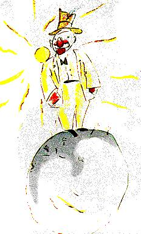

Cé a bhí ina chónaí ar an dara pláinéad ach duine mórchúiseach!
- Ha, ha! Seo cuairteoir a dhéanfas iontas díom! arsa fear na
mórchúise nuair a chonaic sé uaidh an prionsa beag. Ar ndóigh,
dar le lucht mórchúise, ní hann do dhaoine eile ach chun iontas
a dhéanamh díobh féin.

- Dia duit, arsa an prionsa beag. Is ait an hata sin atá ort.
- Tá sé agam le bheith ag beannú do dhaoine, a d'fhreagair fear
na mórchúise. Le beannú dóibh nuair a thógann siad gáir mholta
dom. Faraor, ní thagann duine ar bith an bealach in am ar bith.
-Ó, an mar sin é? arsa an prionsa beag, mar níor thuig sé seo
ar chor ar bith.
- Buail do dhá bhois ar a chéile, is ea a chomhairligh fear na
mórchúise dó mar sin.
Bhuail an prionsa beag a dhá bhois ar a chéile, Bhain fear na
mórchúise de a hata, agus bheannaigh go béasach.
-Is fearr an spórt é seo ná an chuairt a thug mé aran rí, arsa an
prionsa beag leis féin. Agus thosaigh sé ag bualadh a dhá bhois ar
a chéile arís. Thosaigh fear na mórchúise ag baint an hata de féin
agus ag beannú arís.
Tar éis cúig bhomaite a chaitheamh ag gabháil dó, d'eirigh an
prionsa beag tuirseach den chluiche liosta úd:
- Cad é atá le déanamh, ar seisean, leis an hata a bhaint díot ar
fad?
- Cad is ciall le hiontas a dhéanamh díot:
Ach níor chuala fear na mórchúise é. Ní chluineann lucht
mórchúise aon rud ach gártha molta.
-An bhfuil tú ag déanamh iontais díom dáiríre? a d'fhiafraigh
sé den prionsa beag
- Cad is ciall le hiontas a dhéanamh díot?
Is ionann é agus a admháil gur mise an duine is breátha, is
fearr éadach, is saibhre agus is cliste atá ar an phláinéad seo.
- Ach níl ar an phláinéad ach tú féin!
- Déan an gar seo dom, Déan ionfas díom mar sin féin.>
- Is ionadh liom thú, arsa an prionsa beag, ag baint searradh
beag as a ghuaillí, ach cén fáth ar spéis leat an méid sin?
Agus d'imigh an prionsa beag leis.
Go deimhin féin, tá daoine fásta thar a bheith saoithiúil a bhí
sé ag rá leis féin le linn an turais.